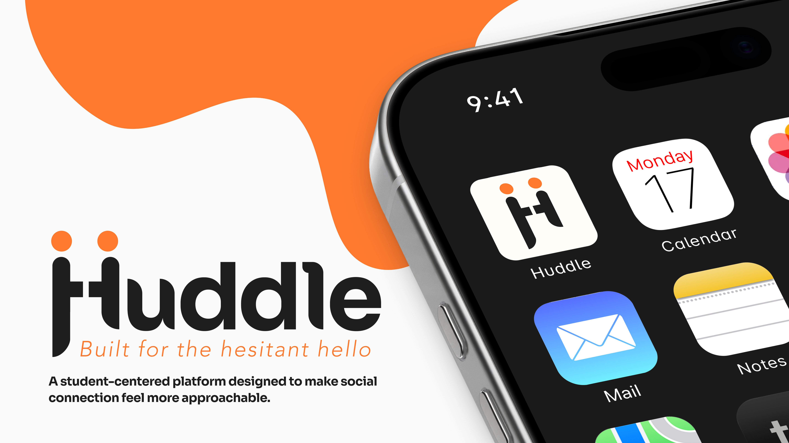
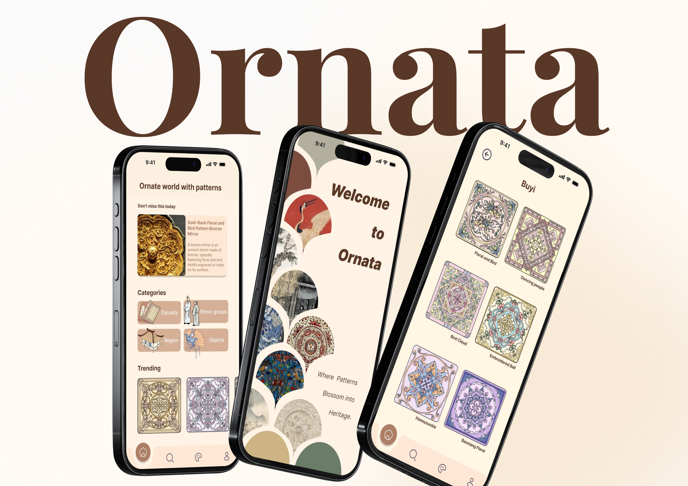
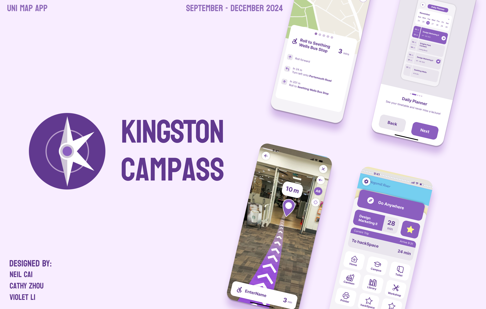
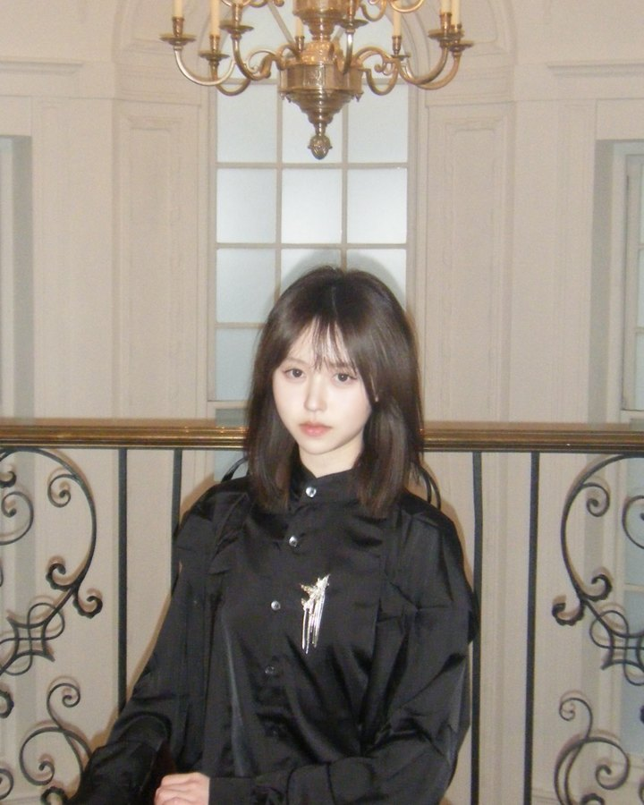

01 / Typography · Book design
The Bamboo Cutter and the Moon Child
An interpretation of The Tale of the Bamboo Cutter, following a girl found inside a bamboo stalk whose home lies beyond Earth.
I'm a UX designer pursuing my MFA at SCAD, with a background in design marketing from Kingston University in London. That background shapes how I approach design: understanding what matters to people, then figuring out how an experience can support them.
Explore my work
Helping college students take the first step toward social connection.
View case study
Enriching museum visits through an app concept that lets visitors scan, learn about, and collect traditional patterns found on artifacts.
View case study
Helping students navigate unfamiliar campuses with clearer routes and directions.
View case studyI'm open to opportunities in UX/UI design, UX research, and product design.

Have a look around my desk. Pick something up and get to know me a little better.
Drag things around the desk, or click one to open it.
If you’d like to talk about design or a potential opportunity, I’d love to hear from you.
Stories I love, ideas I wish existed, and the work I make from them.
An interpretation of The Tale of the Bamboo Cutter, following a girl found inside a bamboo stalk whose home lies beyond Earth.
Inspired by my love of Murder on the Orient Express, an imagined evening of mystery and role-play aboard a train departing London.
Hover to lean · Click to openTap a folder to open it
Leave me a small idea—a visual experiment, an interaction, or something you’d like to see me make.
No promises, but I’m curious.
Built for the hesitant hello.
Huddle is a student-centered social platform designed to make meeting people feel less overwhelming. Through communities, events, chats, and shared experiences, Huddle helps students build meaningful connections at their own pace.
Explore the prototypeMy contributionI collaborated across all four phases of the project, from research and problem definition to design development and testing. While my assigned role focused on UI and interaction design, our team shared responsibilities throughout the process.
College students want more meaningful connections on campus, but three barriers keep getting in the way. Our goal was to make it easier to initiate and sustain social interactions.
Uncertainty and fear of rejection when starting a conversation.
Difficulty joining established social circles.
Limited time to turn encounters into ongoing relationships.
We talked with and observed students from different majors, education levels, universities, and cultural backgrounds. The research explored how students initiate contact, where they feel they belong, their social and digital habits, and the support they look for.
Three fly-on-the-wall observations, two shadowing sessions, and one contextual inquiry.
Social behaviour, belonging, support needs, and digital habits.
Students from different majors, levels, universities, and backgrounds.
A cultural-probe diary recording daily interactions, who started them, and how they felt.
Uncertainty and low confidence can discourage students from initiating.
EvidenceInterviews and our Five Whys traced students not starting conversations back to fear of rejection and unclear social norms.
Shared interests give students something to talk about.
EvidenceAcross methods, real connections tended to happen when students shared interests, backgrounds, or goals.
Passive exchanges and established groups can make deeper relationships difficult.
EvidenceObservations showed students watching more than engaging online, trading quick messages rather than conversations, while stable friend groups grew harder to enter.
Central questionHow might we make social interactions feel more approachable and less overwhelming for students?
These are design responses, not proven social outcomes. Prompts serve initiation and approachability: a low-pressure first line instead of a blank box. Spaces and profiles put common ground up front and welcome every kind of interest, which supports inclusivity. Event details, attendee previews and shared calendars give flexibility to students with little time.
Proposed journey
These low-fidelity wireframes define the core structure and user flow of the app. The decisions that carried into the final app: a fixed bottom navigation, one primary action per screen, and people shown next to every plan.
We ran two rounds of in-person, moderated, scenario-based prototype testing with undergraduate and graduate students. We looked at navigation clarity, feature discovery, interaction flow, and how confident people felt.
Participants liked Finder, but they needed clearer privacy information and more profile context before contacting others.
We added location-sharing explanations, profile previews, and more social context. On the map, nearby people now appear as larger profile photos, and every tab in the navigation is labelled.
The chat view felt cluttered when all conversations were shown together.
We separated chat categories and clarified the hierarchy. “Friends” replaced “All”, so one-to-one chats, group chats and advisers each have their own list, and names stand out on rounded cards.
Three core experiences, discovering communities, joining events, and starting conversations, with Finder adding context about the people nearby. Profile and onboarding support all four.
Find a community that interests you, explore an event, and start a conversation.
A concept prototype with limited working paths.
We evaluated a prototype; longer-term friendship formation and campus adoption were not established. SUS is a score out of 100, not a percentage.
Finder feedback showed that easier contact also requires clear privacy choices and enough context to feel comfortable reaching out.
Separating chat categories reduced visual overload. Small interface decisions matter when the goal is to make social interaction feel approachable.
Next time, I would test one complete journey—from discovering a shared interest to starting a conversation—before expanding the supporting features.
Future work
Test with students across more disciplines, campuses, accessibility needs, and levels of social confidence.
Explore clearer opt-in choices, visibility settings, and ways to pause sharing. Test whether students understand and feel comfortable using them.
Study whether students continue conversations, attend activities together, and feel more connected beyond their first interaction.
TeamDesigned with Katherine Cabrera (UX and visual design) and Katerina Qiu (research lead), for UXDG 701 with Prof. Hayoung Ra at SCAD.
Less searching. More getting there.
Kingston Campass is an app concept designed to help Kingston University students navigate unfamiliar campus spaces. It brings together indoor and outdoor navigation, AR guidance, and a daily planner to connect finding a place with getting there.
Explore the experienceMy contributionI collaborated with two teammates throughout the project, from research and problem definition to interface design, prototyping, and user testing. We shared responsibilities across the process rather than working within fixed roles.
Unfamiliar buildings, changing classrooms, and different access needs can make moving around university difficult. We explored how Kingston students could find destinations across campuses and inside buildings, with guidance connected to their daily routines.
We began with a survey, followed by several rounds of interviews with students from different disciplines at Knights Park and Penrhyn Road. We explored difficulties finding classrooms, preferences for directions, and the features students wanted from a campus navigation app.
Students across different disciplines described difficulty finding their classrooms. Reaching a campus or building was only part of the journey.
Design implicationConnect campus maps with more detailed indoor guidance.
Research highlighted difficulty using cardinal directions such as east and west. Students wanted clearer, simpler guidance.
Design implicationUse familiar instructions such as left and right, supported by visual direction cues.
The research identified interest in customized routes, accessibility-related options, weather considerations, and connections to class schedules.
Design implicationBring route preferences and timetable-based planning into the same experience.
Our personas explored three situations: students discovering unfamiliar spaces, international students adjusting to a new environment, and students who need step-free routes and reliable access information.
Design questionHow might we help Kingston students move between classes and campus facilities with clear guidance that fits their routines and access needs?
The main journey connects destination selection with route guidance. Timetable entries and frequently used places provide additional starting points, reducing the need to search for the same destination repeatedly.
Early wireframes explored how a map could work alongside search, route information, a daily planner, and saved places. We developed these connected tasks before refining the interface and reusable components.
We tested clickable Figma prototypes with students from Kingston and other universities. An initial round explored navigation, widgets, and settings. A later round examined the visual interface, onboarding, and interactions between features.
Design questionHow should students access different route modes while comparing journeys?
A “Mode” dropdown keeps the control compact and leaves more room for the map and route information. Students need to open it to see the available modes.
A bottom selector displays “Speedy,” “Healthy,” and “Cheapo” together, making the choices visible without opening a menu. It also occupies additional screen space.
We carried Option A into the final interface. The compact dropdown keeps route modes accessible without a permanent selector occupying the bottom of the screen.
Kingston Campass brings destination search, route options, daily planning, and campus shortcuts into one experience, helping students navigate around their university.
Map-based instructions and an AR navigation concept offer two ways to follow a route. Direction cards show the next action and distance, while the AR view places visual guidance over the camera scene.
Map and AR navigation concepts shown in the prototype.
The AR route to Marketplace, from the first turn to arrival.
Explore how destination search, route selection, and navigation connect in the prototype.
A concept prototype with limited working paths.
We developed a clickable app prototype supported by student research, wireframes, a reusable interface system, and two rounds of prototype testing. The concept connected campus navigation with schedules, route preferences, and everyday destinations.
Testing takeawayFeedback identified useful elements, including destination search and map interactions, while also revealing areas that needed clearer guidance, stronger visual hierarchy, and better control of map visibility.
Testing explored the interface and proposed interactions. It did not establish real-world navigation accuracy or verify route accessibility.
Research highlighted the difficulty of interpreting cardinal directions. I would continue to prioritize recognizable actions, distances, and landmarks when designing guidance for unfamiliar places.
Testing showed that expanded information could cover too much of the map. I would pay closer attention to what remains visible while someone checks the next step.
Step-free options and lift information need accurate campus data behind them. I would involve students with different mobility needs and campus facilities staff earlier in evaluating the experience.
Future work
Observe students moving between buildings and finding rooms to understand where digital instructions stop matching the physical environment.
Work with campus teams and students to evaluate step-free paths, entrances, lifts, closures, and the process for keeping that information current.
Revisit navigation text sizes, card hierarchy, and expanded panels, then test whether students can read instructions while retaining enough map context.
CreditDesigned collaboratively by Neil Cai, Cathy Zhou, and Violet Li as part of Design Marketing II at Kingston University London.
A closer look. A new discovery.
Ornata is an app concept that helps museum visitors discover the stories behind traditional patterns on artifacts. Through scanning, learning, collecting, and creating, it encourages visitors to continue exploring beyond their museum visit.
Explore the experienceTraditional patterns can feel familiar without their meaning being understood. My research explored how younger audiences engage with these patterns, what makes cultural information difficult to access, and how a museum visit could offer a starting point for further discovery.
I combined secondary research on cultural engagement and digital experiences with interviews, a survey, and visits to the British Museum. Together, these helped me understand audience interests, practical barriers, and opportunities to connect artifacts with more accessible pattern information.
Interviewees recognized traditional patterns but did not always connect them with their cultural significance.
Design responseConnect visual motifs with information about their origins and meaning.
Interviewees described busy routines and wanted an experience that was quick to use. Survey responses also pointed to difficulty finding relevant content.
Design responseMake scanning a direct entry point to pattern information.
Some interviewees wanted to save favorite patterns and organize them into personal folders.
Design responseInclude collecting and organization alongside discovery.
During visits to the British Museum, I noticed that labels often explained the objects without describing their decorative patterns in detail. The chronological organization of the collections also informed how I approached browsing by dynasty in the app.
Design questionHow might we help museum visitors understand the patterns they encounter and continue exploring them after their visit?
I structured Ornata around an immediate museum interaction, followed by opportunities to revisit and reinterpret the patterns that caught someone’s attention.
I studied traditional motifs, broke down their shapes, and explored new arrangements and color combinations. These reinterpretations became part of Ornata’s illustrations, interface, and campaign materials.
I tested prototype tasks including signing in, accessing AR, scanning, and creating a pattern. Feedback raised questions about navigation and information placement, while the creation task revealed hesitation around customization. Further interface comparisons helped me refine category browsing.
The original object categories relied on names and decorative backgrounds. Visitors had little information about unfamiliar categories before opening them.
I replaced the text-led buttons with illustrated cards, pairing each object name with a short description and an arrow indicating further content. On the homepage, I also replaced textured category backgrounds with illustrations associated with each browsing theme.
Category illustrations bring visual context to the four browsing routes: dynasty, ethnic groups, region, and objects.
The original creation screen offered only size and rotation controls. During testing, participants hesitated over customization and asked for more adjustment options.
I expanded the controls to include exposure, contrast, saturation, and temperature alongside size and rotation. I also moved the “Adjustment” heading beneath the preview to group it with the controls it describes.
The final concept connects the moment a pattern catches someone’s attention with opportunities to learn about it, keep it, and explore it creatively.
Scan a pattern, explore its story, and save it to your collection.
A concept prototype with limited working paths.
Alongside the app, I developed a marketing strategy that connected museum discovery with social storytelling and physical pattern-based products.
Proposed campaign and partnership strategy
I proposed museum partnerships that would introduce Ornata through exhibitions. Pattern-led posters and exhibition-specific collecting activities would connect the app with objects visitors could encounter in person.
I developed social content using artifact imagery, pattern details, and a notebook-inspired format. The proposed approach introduced cultural stories through visual details and invited audiences to continue exploring through Ornata.
I extended the visual work into printed stickers and silk scarves, exploring how the reinterpreted patterns could exist beyond the screen.
Physical design outcomes created for the project.
Ornata brought together audience research, an app prototype, an AR demonstration, and a proposed marketing campaign. I also developed a visual language through pattern reinterpretations, illustrations, motion work, and physical products.
The project explored the concept through research and prototype testing. It did not measure live museum use, adoption, or long-term engagement.
Museum visits showed me how much context can sit behind a decorative detail. I would involve cultural specialists earlier to strengthen the accuracy, sourcing, and interpretation of the content.
Developing illustrated categories helped me think about visual design as part of navigation. Images and short explanations can give people context before they choose where to explore.
Working across the app, AR, campaign, and physical products stretched the project’s scope. I would prioritize the museum discovery journey before developing commerce or subscription features.
Future work
Evaluate whether visitors can move from noticing an artifact to finding useful pattern information without interrupting their visit.
Explore technical feasibility, image-use permissions, and curatorial partnerships to connect artifacts with reliable pattern information.
Test whether saved collections and creative tools give visitors a reason to return after their initial museum interaction.
CreditResearch, concept, app design, illustrations, and campaign development by Violet Li.
Historical pattern references and supporting research are credited in the original project documentation.
The personal brand system behind this portfolio: a vintage, minimal stationery look built on one violet palette, DM Sans and a few paper objects used with restraint.
Warm paper ground, hairline rules and printed-matter details (tabs, stamps, tape) make the site feel collected and personal.
Each section has at most one decorative object. Everything around it stays plain so the work leads.
Numbers, methods and outcomes are set larger than adjectives. Recruiters should find impact in five seconds.
Your illustrated avatar is the logo: it sits beside the name in the navigation at 36px, always as a circle. Keep clear space of half the logo's width on every side. Decoration is editorial and print-inspired, never cute: a registration mark separates words in the serif bands, and line-drawn desk and UI objects (paper clip, cursor, locate target, compass, wax seal, postage stamp) sit on the paper.
Seven brand colours from your moodboard, plus four neutrals derived from them. Japanese Violet carries weight (bands, solid buttons); the pale lavenders carry highlights and surfaces. Pure black is reserved for the logo on print; on screen, text uses Ink.
| Text | Background | Ratio | WCAG |
|---|---|---|---|
| Ink | Paper | 17.2 : 1 | AAA |
| Japanese Violet | Paper | 10.7 : 1 | AAA |
| Lavender Blush | Japanese Violet | 9.6 : 1 | AAA |
| English Violet | Paper | 9.0 : 1 | AAA |
| Thistle | Japanese Violet | 6.7 : 1 | AA |
| Ink | Lavender Gray | 9.9 : 1 | AAA |
| Muted | Paper | 5.9 : 1 | AA |
| Old Lavender | Paper | 5.8 : 1 | AA |
| Old Lavender | Lavender Gray | 3.4 : 1 | Large text only |
Three roles, per the homepage brief. Instrument Serif Regular sets the homepage headline and occasional short statements, and its italic marks one or two accent words per heading. DM Sans Regular carries descriptions, paragraphs and captions. DM Sans Medium/Semibold is for navigation, buttons, project names and section headings. DM Mono handles hex codes and small data.
A 4px base scale. Sections breathe at 96 to 128px; cards use 16 to 24px inside. Corners are soft (6 and 12px) and buttons and tags are full pills, echoing the references.
Layout: content max 1160px, reading column 660px, 16px minimum gutter. Case studies use a 200px sticky chapter rail beside the content; below 820px everything stacks to one column.
One solid button per view. Minimum 44px tall. Arrow ↗ marks links that leave the page or open a case study.
Labels sit in parentheses, in caps, like an archive index.
A Lavender Gray marker behind key words. Max three per page.
Tones rotate Thistle, Lavender Gray, Lavender Blush.
Perforated tiles for real research numbers only.
Personal photos only, tilted 2 to 3°, with washi tape.
Frames every project cover so screens read as product work.
Always drawn to scale with the axis or the value shown.
One per row, image above text, 16:10 preview with one dominant screen. Whole card is one link: border darkens and the arrow nudges on hover; titles never hide.
Email shown in full as text, with a copy button that confirms. Mail links can't open everywhere.
Under 620px the nav collapses to the name and a labelled Menu button.
Order and wording come from Violet's Notion brief, "Homepage structure, from top to bottom".
What this system borrows, and from where. Your Notion brief decides the homepage structure; the references shape the style.